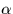
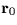
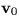
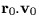
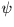

| DATE | D | TT MJD of observation (JD-2400000.5) |
|---|---|---|
| ELONG,PHI | D | observer's longitude (east +ve) and latitude |
| radians) | ||
| U | D(13) | universal elements (updated in place) |
| (1) | combined mass (M+m) | |
| (2) | total energy of the orbit () | |
| (3) | reference (osculating) epoch (t0) | |
| (4-6) | position at reference epoch () | |
| (7-9) | velocity at reference epoch () | |
| (10) | heliocentric distance at reference epoch | |
| (11) |  | |
| (12) | date (t) | |
| (13) | universal eccentric anomaly () of date, approx |
| RA,DEC | D | topocentric apparent (radians) |
|---|---|---|
| R | D | distance from observer (AU) |
| JSTAT | I | status: |
| 0 = OK | ||
| -1 = radius vector zero | ||
| -2 = failed to converge |
SLALIB --- Positional Astronomy Library